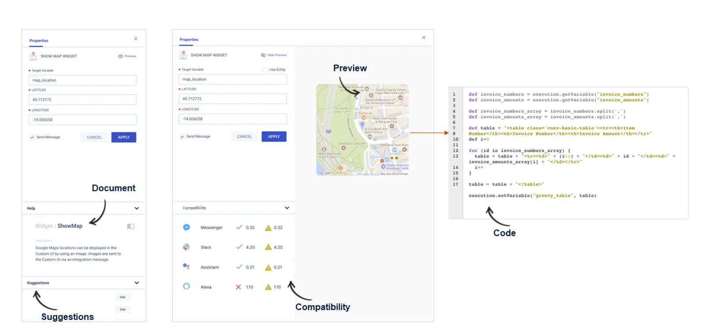

AI builder platform · SaaS conversational platform
A low-code AI IDE with an easy visual editor and pre-built widgets to manage the end-to-end conversational process.
Role
Senior UX Designer, design lead for the builder
Company
Enterprise conversational AI company
Team
PM, engineers, data scientists, linguists, client owners

~40%fewer developer hours to build a bot
80%of bot ownership moved to business teams
1,000+business users building on their own
Context
Banks, insurers and IT teams used this conversational AI platform to build virtual assistants. To build one assistant, a team had to move across 10+ tools, and even removing a comma needed a ticket to a developer. Conversational AI was new for me and the deadline was tight. After the research I understood the real problem was not the screens. The ownership was stuck with developers.
The problem
Every change came back to a developer
Even removing a comma meant raising a ticket
The business owner explained, the conversation designer mapped intents, and the developer wrote the logic. For the next change, the same loop started again.
Business owner explains
Conversation designer maps intents
Developer writes the logic
Next change
Same loop again
The loop I wanted to break.
The problem was not missing AI
The platform had strong AI, but it was weak where business users start. Competitors already had easy no-code tools, so if we stayed developer-only we could lose clients and we could not scale.
So my goal changed from making the screens nicer to moving the ownership to business users, and keeping full power for developers.
The design decisions
Seven decisions I took
I put every task in one web IDE
Each old tool had its own menu, workspace and pop-up. I designed one layout with four blocks: library, tools, workspace and properties. Engineers already know this layout from tools like Visual Studio, and it works for every screen. Because of this the first release became bigger.
Business users and engineers need very different depth. A separate business app would split the product, and one complex screen would lose beginners. So during onboarding we ask the role of the user. Business users get a guided Easy mode, and experts can switch to Advanced mode. This added more states to design and test.
Business users could start on their own, and this helped to move the ownership.
I replaced the flow editor that engineering had already started
The old BPMN flow showed a label, but not what a node does. Developers wanted to keep it because it was already built. I did not argue with them. I showed the same real flow in old and new design side by side, and the team agreed.
A pop-up covered the canvas, so users lost their place. I moved it to a right-side drawer, which keeps the flow visible and also shows examples and short documentation. We lost some canvas width because of this.
Business users could not add a map, a form or a calendar without a developer. So I added a widget catalogue inside the flow, with search, preview and help. Developers still get a code view, so they can reuse it.
Business users could add rich content without a developer.
The catalogue opens inside the flow.
I put testing where people build
Testing lived in another tool. I brought it into the same layout, so users can see errors, live chat and the reason behind each answer side by side.
People see why the bot answered, and fix it without switching tools.
Teams could see that conversations failed, but not where. So analytics starts with the whole journey, shows the broken step on the flow, and users can fix the unsure phrases on the same screen.
I tested the editor before we built it. People said it was not informative, and the canvas controls were not clear. Version 2 added icons on each node. Version 3 added a step-by-step guide with the current and next action.
We went through three versions, based on what users told me.